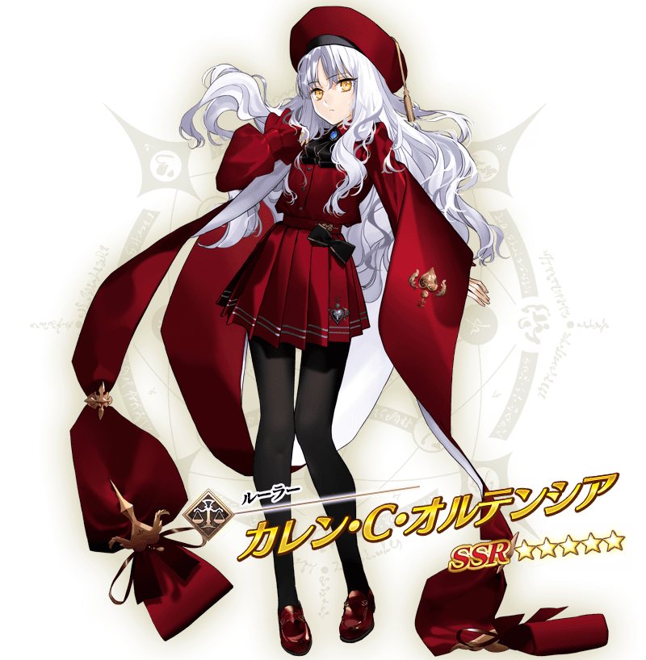

期間限定活動「聖瓦倫蒂諾！ ～迦勒底・苦澀・情人節2021～」決定舉辦！
與去年同樣地，包含新登場的從者，領取全從者的禮物時會展開附語音訊息。
詳情請期待續報。
※本頁面皆為開發中圖片。會有與實際圖片相異的情況。
◆活動舉辦預定◆
2021年2月10日(三) 17:00～(預定)
◆活動參加條件◆
滿足以下條件的御主才能參加
・通過「特異點F 炎上汙染都市 冬木」

新從者「★5(SSR)卡蓮．Ｃ．奧爾黛西亞」會在期間限定的聖晶石召喚與本活動的開始同時登場！
「★5(SSR)卡蓮．Ｃ．奧爾黛西亞」在期間限定活動「聖瓦倫蒂諾！ ～迦勒底・苦澀・情人節2021～」的活動關卡中會得到「自身的攻擊威力提升100%」及在關卡通過時得到的「自身的絆點數獲得量提升50%」的加成！
